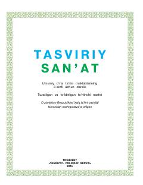

TS3-sinf o'quvchilari uchun tasviriy san'at fani darsligi.
Mazkur darslik umumiy o'rta ta'lim maktablarining 3-sinf o'quvchilari uchun tasviriy san'at fanidan mo'ljallangan. Unda yoz va kuz manzaralari, kontrast ranglar, naturaga qarab rasm ishlash va naqshlar yaratish asoslari o'rgatiladi. Shuningdek, amaliy mashg'ulotlar va milliy san'at namunalari bilan tanishish imkoniyati beriladi.